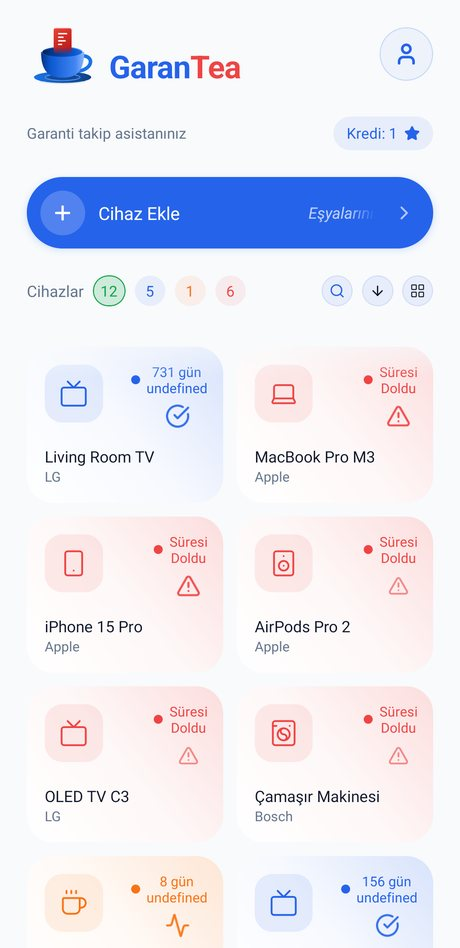
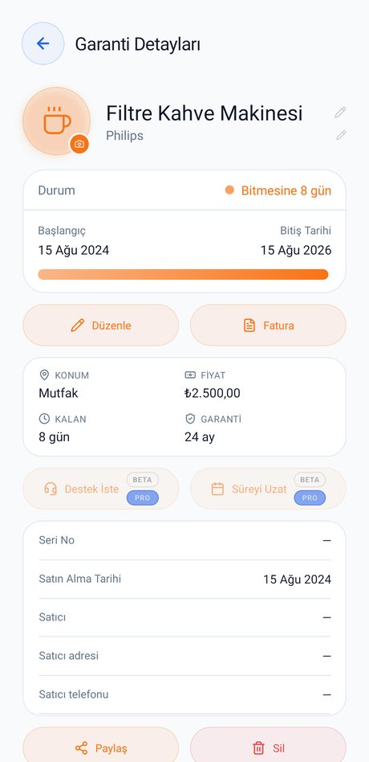
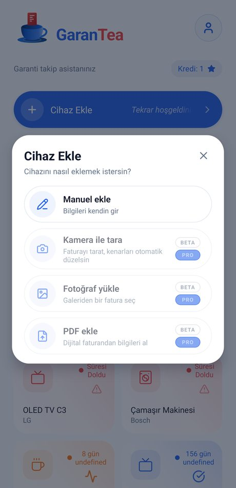
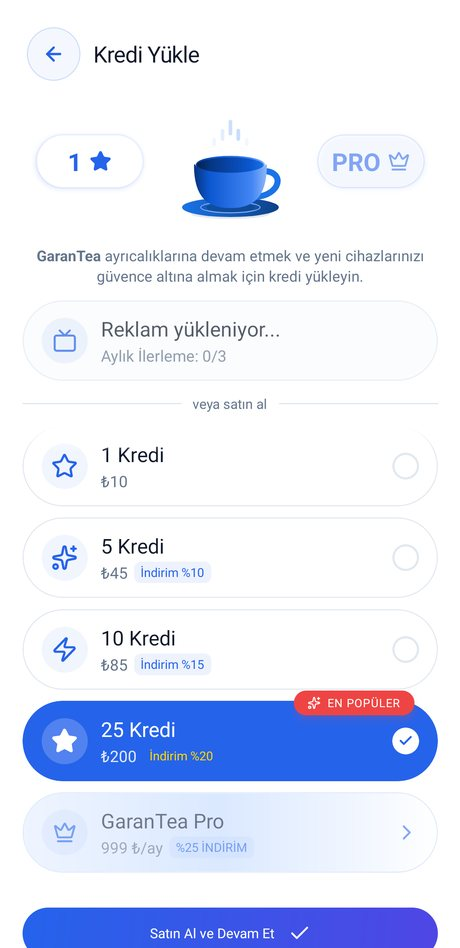

GaranTea
Garanti Takip Asistanınız
Garantisi bitmeden haberin olsun.
Her cihazın faturasını ve garanti süresini tek yerde topla. GaranTea süreyi senin yerine takip eder, zamanı gelince hatırlatır.
- Süre dolmadan uyarı. Bildirim, hâlâ vaktin varken gelir.
- Faturan kaybolmaz. Belgeler cihaza bağlı durur; servise giderken yanında.
- Verin satılmaz. Konum, mikrofon ve rehber izni hiç istenmez.



